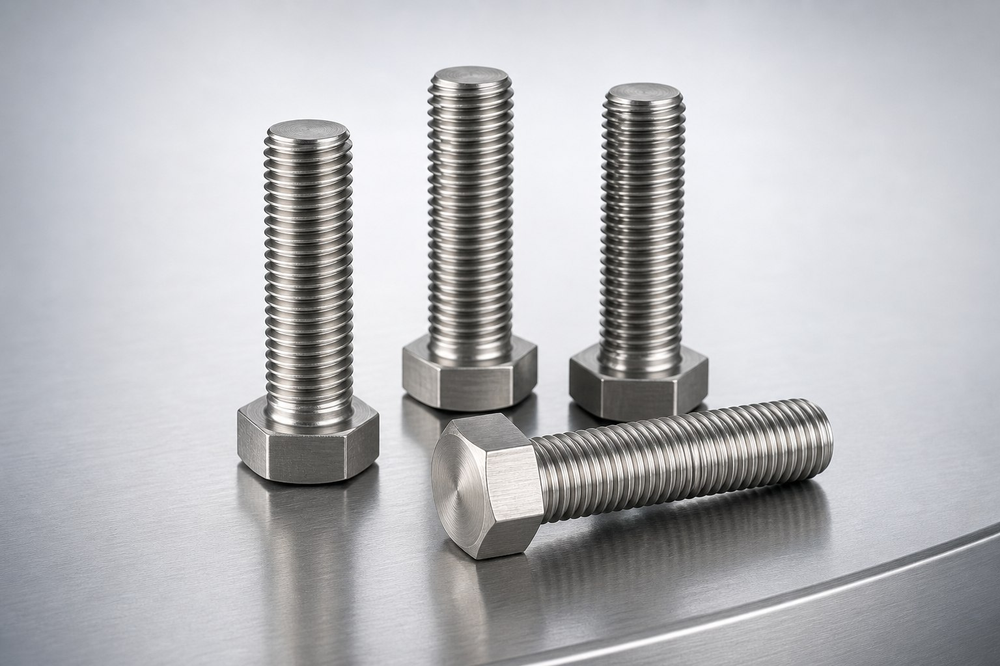

Sample product detail
Nickel-Alloy Hex Bolts
Hex-head fasteners for high-temperature and corrosion-critical assemblies, reviewed against the specified alloy, thread, dimensional standard and inspection scope.
Request this product
Technical overview
Specified around the assembly.
This page is a content and layout sample. Final ranges will be replaced with confirmed BYBOLT supply data.
- Product form
- Hex-head machine bolt
- Material options
- Inconel 625, Inconel 718, Hastelloy C-276 or buyer-specified alloy
- Thread options
- Metric, UNC or UNF to drawing or applicable standard
- Dimensional control
- Drawing, purchase specification or agreed fastener standard
- Inspection
- Dimensional, PMI, hardness or additional testing when specified
- Documentation
- Material and traceability records aligned with the quoted scope
Ready for technical review